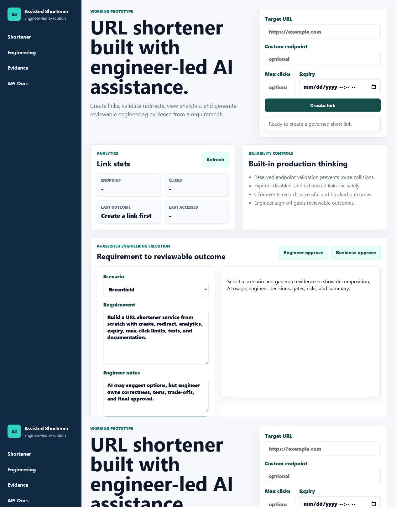
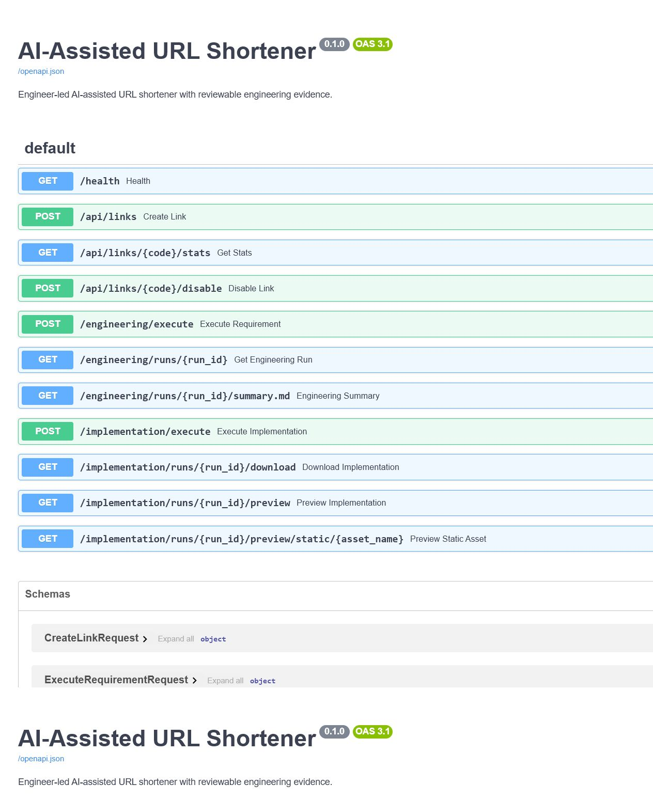
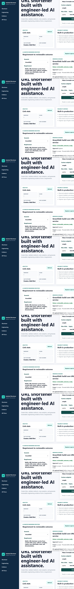

Prototype
Complete
FastAPI, SQLite, static UI, redirects, stats, disable, expiry, max clicks.
AI-assisted software engineering prototype
A production-style FastAPI prototype that transforms a requirement into a reviewable engineering outcome while keeping the engineer in control of correctness, sign-off, and readiness.
Complete
FastAPI, SQLite, static UI, redirects, stats, disable, expiry, max clicks.
Complete
Components, tools, execution flow, control flow, and key decisions documented.
Complete
Greenfield, brownfield, and ambiguous paths each show execution and validation.
Complete
pytest, ruff, smoke gates, security checks, generated-package validation.
cd ai_assisted_shortener
python -m pip install -r requirements.txt
python -m uvicorn app.main:app --host 127.0.0.1 --port 8010Open http://127.0.0.1:8010/ for the UI and http://127.0.0.1:8010/docs for API docs.
Users can create links, inspect analytics, and run AI-assisted engineering scenarios from the same page.

FastAPI exposes OpenAPI/Swagger definitions for shortener, engineering, and implementation routes.

Each run shows intent, ambiguity, normalized problem, task graph, impacted components, traceability, gates, and risks.

Approved requirements produce a separate generated workspace with changed files, tests, report, validation JSON, zip download, and UI preview.
| Required Deliverable | Where to Review |
|---|---|
| Working prototype | ai_assisted_shortener/app, local UI, Swagger docs |
| Architecture overview | ai_assisted_shortener/docs/ARCHITECTURE.md |
| Three scenarios | ai_assisted_shortener/docs/SCENARIOS.md and Engineering UI |
| Setup instructions | README.md and ai_assisted_shortener/README.md |
| Testing, limitations, trade-offs | ai_assisted_shortener/docs/TESTING.md |
| Requirement compliance | ai_assisted_shortener/docs/COMPLIANCE_MATRIX.md |